AI Engineering: Streamline AI Agent Development with Red Hat Advanced Developer Suite Templates
Objectives
Using a pre-existing software template, you will create a new resource in Red Hat Developer Hub. This resource will serve as a blank template for your team to build an AI agent. You are leveraging the templates already setup with all necessary Kubernetes manifests, including the trusted software supply chain, deployments, and application promotion. In the next lab, your team will add their application source code to this new resource, integrating it into the software development lifecycle.
Scenario
You are part of the AI Engineering team, and you will leverage the tools set up by the AI Platform Engineering team. These tools are setup with best practices aligned with your organization’s guidelines.
Let’s get started.
Understanding software templates
Software templates provide the manifests to build, deploy, and promote any application that runs on Kubernetes. They ensure development teams start with established best practices and organizational guidelines, putting guardrails and compliance in place before the application ever runs on the cluster.
About pre-defined software templates
Pre-defined software templates are included with the RHADS installation. They provide recipes users can leverage to start bringing applications into OpenShift. These templates offer a starting point and reference for building applications using the Trusted Software Supply Chain (TSSC). They are not intended for production use; customers can add their own configurations on top of these templates by following the Customizing Red Hat Trusted Application Pipeline documentation.
Create the component
Let’s create a new component from the pre-existing Software Template in Red Hat Developer Hub.
-
Click on catalog:
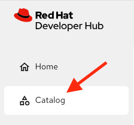
-
Next, click on Self-service:
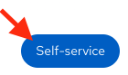
Then select the software template: Python - Trusted Application Pipeline
-
Click on Choose
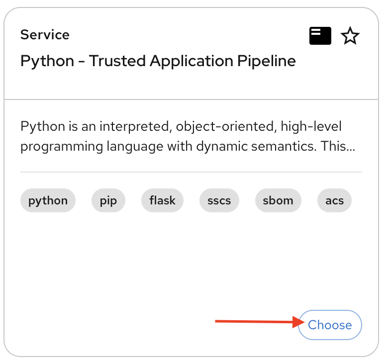
Follow the steps to create the component in Red Hat Developer Hub, adding the following input data for each section.
Application Information
Enter the following data:
-
Name: ai-agent
-
Owner: Select the user: user1 from the dropdown:
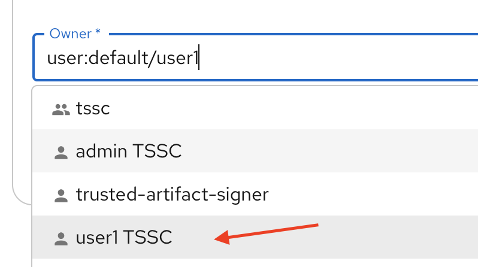
Click on Next
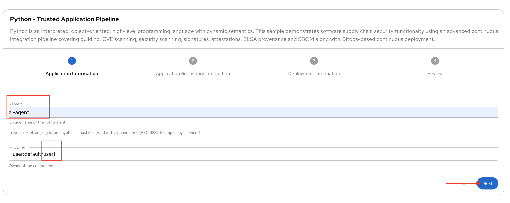
Application Repository Information
Change only the following fields:
-
Host Type: GitLab
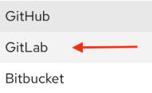
-
Repository Name: ai-agent
-
Repository Owner: rhdh
-
Repository Server: gitlab-gitlab.{openshift_cluster_ingress_domain}
Your screen should look similar to this:
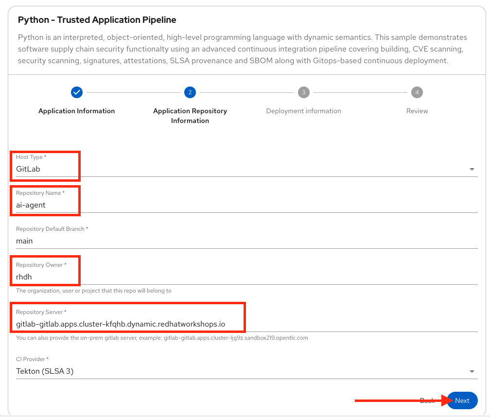
Keep Repository Default Branch and CI Provider with the default values.
Note: The GitLab URL may differ, as the cluster domain will vary.
Click on Next
Deployment Information
Change only the following inputs:
-
Image Registry: quay-my-guid.{openshift_cluster_ingress_domain}
-
Image Organization: tssc
-
Image Name: ai-agent
Your screen should look similar to this:
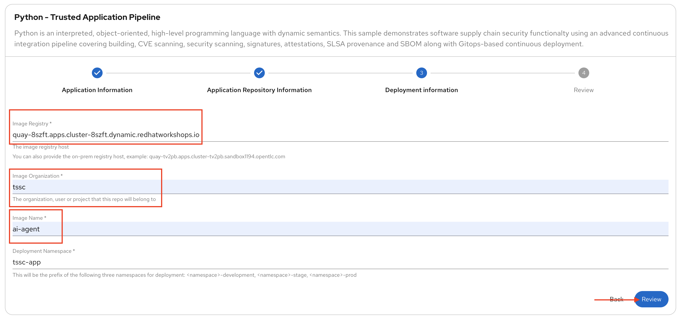
Keep Deployment Namespace with the default value.
Click on Review
Your screen should look similar to this:
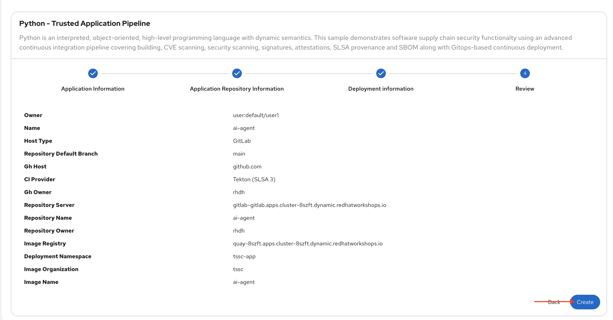
Ensure your information matches the image, except for the cluster domain.
Click on the Create button
Red Hat Developer Hub will run the tasks defined in the template.yaml file and other manifests. Once finished, all steps will appear in green.
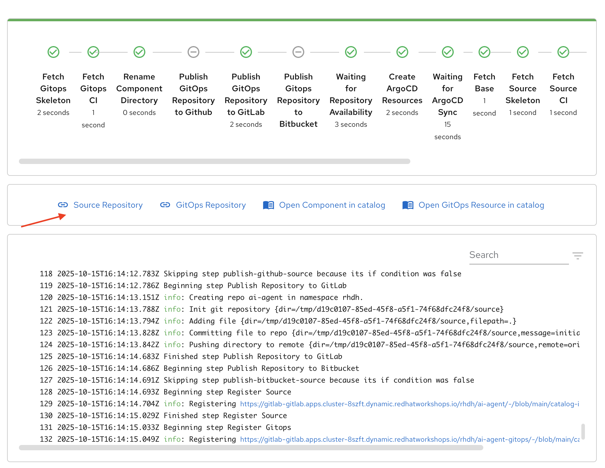
Next, you will explore the application source code.
Congratulations! You now have a resource available for the AI team to start building their application.
Exploring the software template
In this section, you will review what was created and learn how to understand these configurations.
Two repositories were created, both required to build and deploy the application:
-
Source Repository: Contains pipelines that validate pull requests, ensuring image updates are safe before promoting applications to the next environment (e.g., from staging to production). It also contains a sample app, which AI Engineers will use to add the AI Agent.
-
GitOps Repository: Represents the AI application deployment configuration, including all the necessary manifests to deploy the application in OpenShift. Learn more about these templates at Customizing Sample Pipelines.
Adding more configurations
You have received new requests from the AI Engineering team:
-
Update the dev.yaml file with application configurations.
-
Integrate Red Hat Developer Hub with Red Hat OpenShift Dev Spaces.
-
Configure the application to use environment variables to connect to an AI model and an API.
-
Create a GitLab webhook to trigger the OpenShift Pipelines.
Typically, Platform Engineers manage custom configurations by updating the source software templates. In this case, however, you will apply these configurations directly to your newly created component since we are leveraging a pre-existing template.
Let’s work on these requests!
1- Update the devfile.yaml
In this section, you will replace the whole content of the devfile.yaml file. Review the updates, a few of the major changes involves both the application’s name and description, as well as the commands for running the application.
-
Go to the GitLab source code repository:
-
On the same screen, click on Source Repository
-
Or use the following URL, GitLab AI Agent.
-
-
Log in to GitLab using your credentials:
-
Click on Sign in:
-
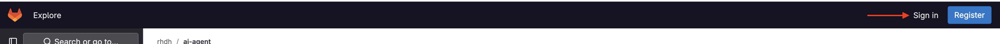
-
Username: {gitlab_user}
-
Password: {gitlab_user_password}
-
Click the devfile.yaml file in the project’s root directory.
-
Click on Edit, then Edit Single File
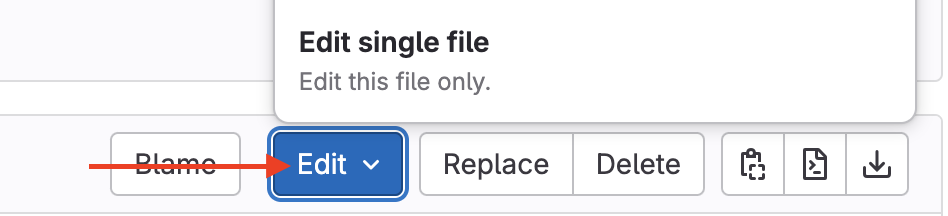
-
Copy the content provided by clicking the icon:
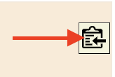
-
schemaVersion: 2.2.2
metadata:
name: ai-agent
displayName: "AI Research Agent"
description: "Web-based AI research agent with search capabilities"
components:
- name: python
container:
image: registry.redhat.io/devspaces/udi-rhel9:3.23
volumeMounts:
- name: venv
path: /home/user/.venv
memoryLimit: '2Gi'
memoryRequest: '1Gi'
cpuLimit: '2'
cpuRequest: '1'
mountSources: true
env:
- name: FLASK_ENV
value: development
- name: FLASK_DEBUG
value: "1"
- name: venv
volume:
size: 1G
commands:
- id: install
exec:
label: "Install Dependencies"
component: python
workingDir: ${PROJECTS_ROOT}/ai-agent
commandLine: python -m venv .venv && . .venv/bin/activate && pip install -r requirements.txt
group:
kind: build
- id: run
exec:
label: "Run AI Agent Server"
component: python
workingDir: ${PROJECTS_ROOT}/ai-agent
commandLine: . .venv/bin/activate && gunicorn --bind 0.0.0.0:8080 --workers 2 --threads 4 --reload app:app
group:
kind: run
- id: dev
exec:
label: "Run Development Server"
component: python
workingDir: ${PROJECTS_ROOT}/ai-agent
commandLine: . .venv/bin/activate && python app.py
group:
kind: run
- id: health
exec:
label: "Health Check"
component: python
workingDir: ${PROJECTS_ROOT}/ai-agent
commandLine: curl -f http://localhost:8080/health || echo "Service not ready"
group:
kind: test-
Paste it into the file REPLACING THE WHOLE CONTENT
-
Commit your changes:
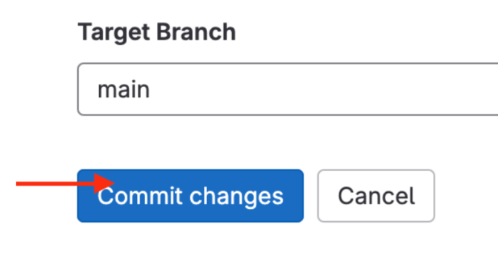
2- Integrating Red Hat OpenShift Dev Spaces
Next, you will integrate Red Hat OpenShift Dev Spaces. You will add a link to the component’s overview UI. To accomplish this task, you will add the information to the the catalog-info.yaml file.
-
Go back to the project’s root folder and find the catalog-info.yaml file:
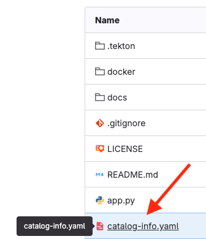
-
Click the file
-
Click Edit, then Edit Single File
-
Copy the following code:
- url: https://devspaces.{openshift_cluster_ingress_domain}/dashboard/#https://gitlab-gitlab.{openshift_cluster_ingress_domain}/rhdh/ai-agent
title: RH OpenShift Dev Spaces
icon: dashboard
type: admin-dashboard-
Paste it at line 11 to add it to the current content, without replacing the existing content.
Your file should look similar to this, although the cluster domain will be different:
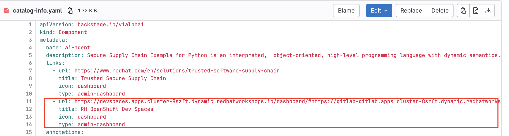
-
Commit your changes:
Verify the link was added to the component:
-
Go back to {rhdh_url}/catalog/default/component/ai-agent/[Red Hat Developer Hub UI - AI Agent^]
Note: It might take some minutes to show the new link. To speed it up access the template can refresh the entity using the refresh icon in the entity’s About box, then refresh the full RHDH UI webpage.
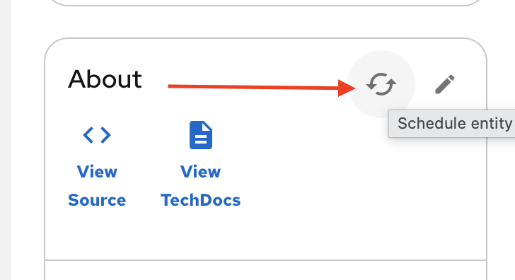
-
You should see a new link in the component’s overview:

Note: Do not click the link. You will use Red Hat OpenShift Dev Spaces in the next lab as an AI Engineer.
Create the webhook
Webhooks are not part of the pre-defined software templates, but they are required to trigger pipelines when the source code changes. Now, create a webhook in the source code repository in GitLab.
-
Go to the source code repository or access it directly: GitLab AI Agent
-
Click Settings > Webhooks
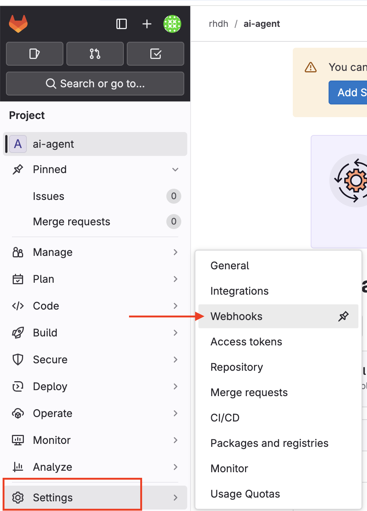
-
Click Add new webhook
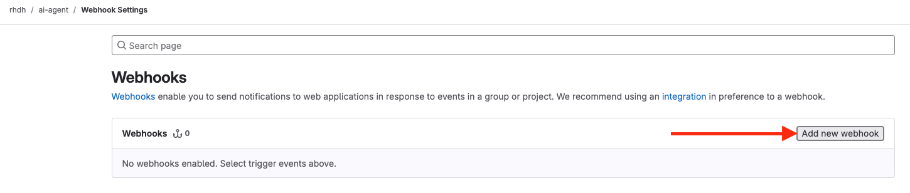
-
Copy the OpenShift Pipelines controller URL and paste it in the URL field.
https://pipelines-as-code-controller-openshift-pipelines.{openshift_cluster_ingress_domain} -
In the Trigger section, select the following:
-
Push events
-
Tag Push events
-
Comments
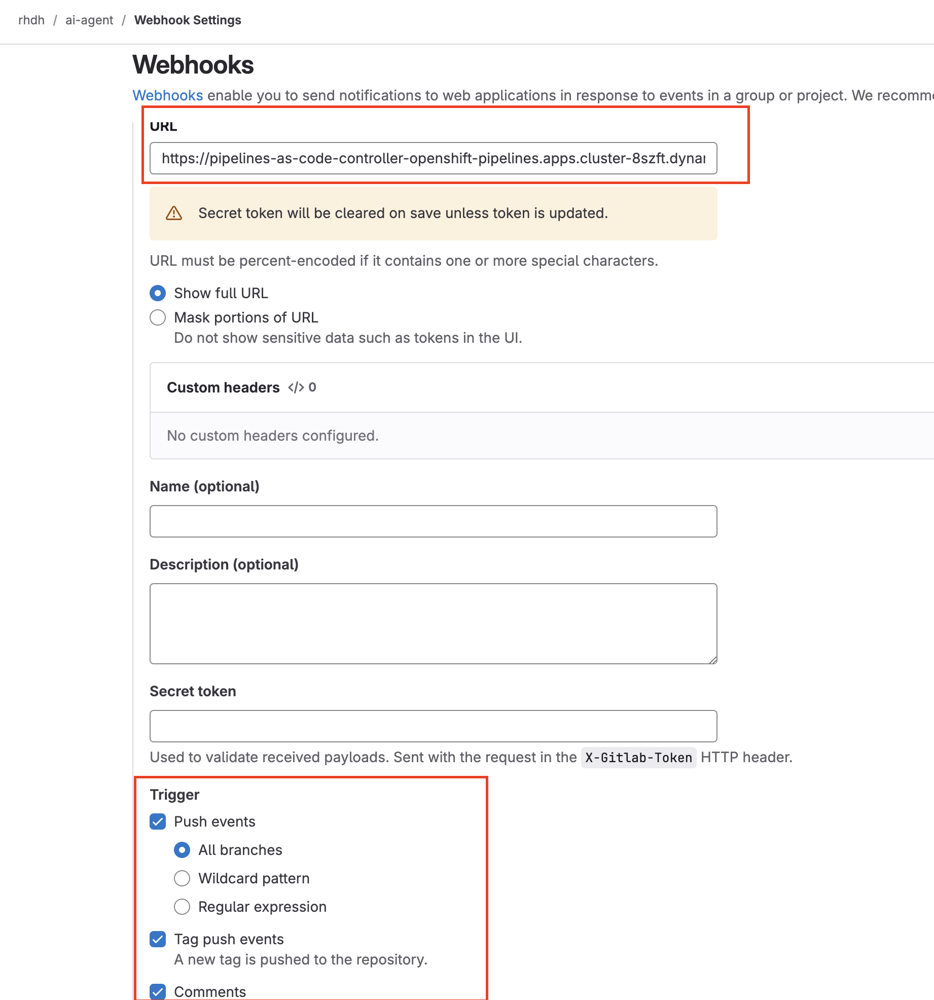
-
Scroll to the bottom and click Add webhook.
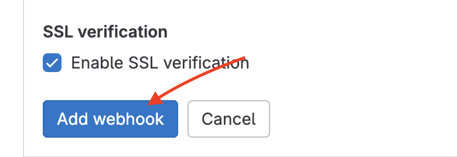
Next, you will test the webhook from this screen to ensure it works.
Test the webhook
-
On the Webhooks screen, click Test and select Push events.
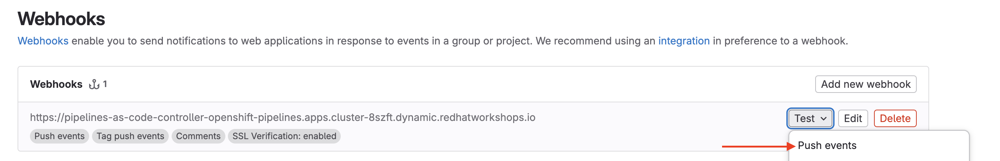
-
This will trigger the pipeline.
Explore the Pipeline
-
Go back to {rhdh_url}/catalog/default/component/ai-agent/[Red Hat Developer Hub UI - AI Agent^]
-
Click the CI tab.

Note: The pipeline will take a few minutes to complete all steps. Wait for the pipeline to finish before continuing with step 3.
The AI agent will be built using the Trusted Software Supply Chain (TSSC) provided by Red Hat Advanced Developer Suite. This ensures all security best practices and organizational guardrails are in place before development begins. As a best practice, this applies a shift-left security approach to all development.
The TSSC pipeline uses OpenShift Pipelines to build a container image, generate an SBOM, and push both to Red Hat Quay. Subsequent tasks use the Red Hat Advanced Cluster Security (ACS) roxctl CLI: acs-image-check verifies the image signature against security policies, and acs-image-scan identifies vulnerabilities. Red Hat Quay acts as the secure image registry, storing the signed images, SBOMs, and metadata.
To learn more, review the Module 10: RHADS End-to-End: Production-Ready Development Lifecycle module.
Note: If you face a 500 error during the build container image step, restart the quay-quay-app. pods (2 pods) in the quay-enterprise namespace.
3- Add environment variables
-
Go to the AI Agent GitOps repository’s deployment.yaml: ai-agent-gitops deployment.yaml.
-
Click Edit, then Edit Single File.
-
At line 52, paste the new code. Ensure you are adding your source before the imagePullSecrets. This adds integrations for LLM models (name, URL, API key) and the Tavily API, which will be used as an AI Agent tool. Ensure you are not replacing the current content.
- name: MODEL_NAME
valueFrom:
secretKeyRef:
name: ai-agent-secrets-llm
key: MODEL_NAME
- name: LLM_API_BASE_URL
valueFrom:
secretKeyRef:
name: ai-agent-secrets-llm
key: LLM_API_BASE_URL
- name: TAVILY_API_KEY
valueFrom:
secretKeyRef:
name: ai-agent-secrets-tavily
key: TAVILY_API_KEY
- name: LLM_API_KEY
valueFrom:
secretKeyRef:
name: ai-agent-secrets-llm
key: LLM_API_KEYYour file should look like this. Ensure the indentation is correct:
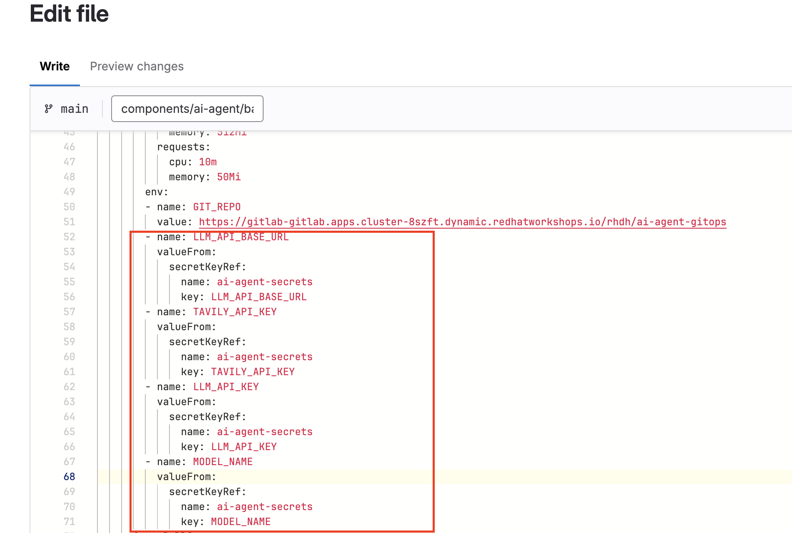
-
Commit your changes:
Note: In the next lab, the developer will create the secret with the keys. This is not a recommended practice, but it is done for this lab to avoid sharing private keys in a public repository.
Great job! You have successfully built the tools for the AI Engineering team to start building the AI Agent.